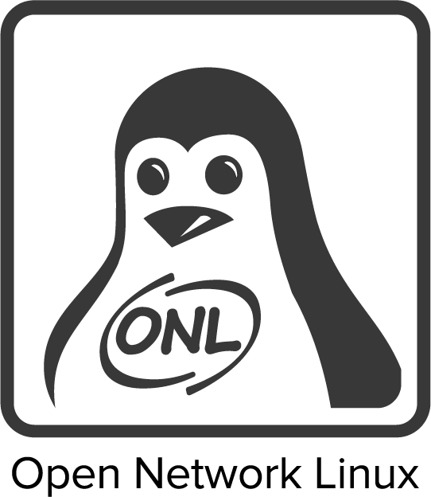
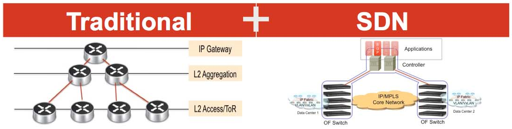
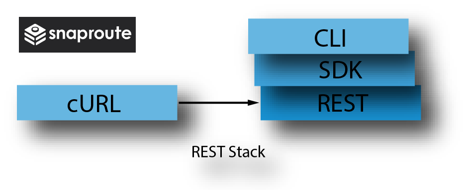
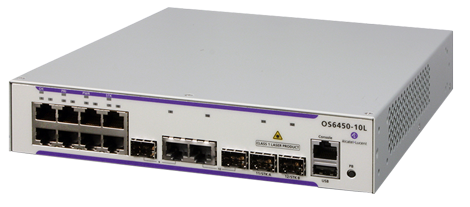
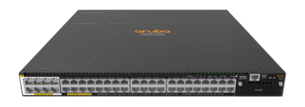

SD Firewall
Opciones de switch para Caso de Uso en Empresas y Corporaciones
Creado por Salvador Estrán
Opción bare metal
Descripción: switch OCP + Open Network Linux + Agente OpenFlow
Switches compatibles ONL
Switch 48 puertos 10/100/1000:
Opción bare metal
Más opciones de diseño en ONL Hardware Support
Consultar la wiki OCP Networking
Opción white box
Descripción: switch OCP + Network Operating System de fabricante independiente (ISV)
PicOS® de Pica8
- Routing/Switching y reenvío desagregado del plano de datos
- Agente OpenFlow 1.5 basado en Open vSwitch mejorado
- Modo híbrido incluido en la versión Enterprise
- Automatización mediante API REST
Más información en Pica8
FlexSwitch® de SnapRoute
- Utilizado actualmente por Facebook, Amazon, y AT&T
- Automatización y Control sin necesidad de OpenFlow
- API REST vía cURL y SDK Python
Más información en SnapRoute
Opción comercial
Descripción: switch de fabricante tradicional con capacidad para funcionar en modo híbrido (doble pipeline OpenFlow + Estándar)
Alcatel-Lucent Enterprise
Familia OmniSwitch® 6450-24/48
- 24 o 48 puertos 10/100/1000
- 2 puertos 10 GigE
- Gestión en banda
- OpenFlow 1.0 y 1.3.1
Más información en ALU Enterprise
Hewlett Packard Enterprise
Familia Aruba® serie 3810M
- 24 o 48 puertos 10/100/1000
- 4 puertos SFP+ 10 GbE
- Gestión fuera de banda
- OpenFlow 1.0/1.3 y API REST
Más información en HPE
SD Firewall
Esto es todo por el momento...
Creado con reveal.js